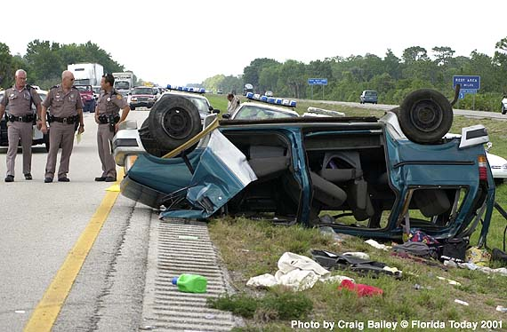

April 15, 2001
4
die in I-95 van rollover in southern Brevard

A
Ford Aerostar van carrying New York tourists flipped over on I-95 on
Saturday near the Grant
Road overpass. Image Copyright © 2001, Craig Bailey, FLORIDA
TODAY.
Those
killed not wearing seat belts; 4 others hurt
By
Jennifer Ellis
FLORIDA TODAY
GRANT,
Fla. -
Four tourists from Jackson Heights, N.Y., were killed and four of their
companions injured Saturday when their minivan flipped on Interstate
95.
The
1993 Ford Aerostar, which was bound for Orlando, was the only vehicle
involved in the accident, which occurred about 12:45 p.m. just south of
the Grant Road overpass in South Brevard County. The van flipped at
least three times before landing on its rooftop in the southbound
passing lane.
Troopers
are not sure what caused the accident, but believe the driver,
33-year-old Caesar Gomez, overcorrected and lost control of the van.
Four
of the van's occupants were thrown onto the roadway or grassy median
and died at the scene. None of the ejected passengers was wearing seat
belts, Florida Highway Patrol Sgt. Chuck Griffiths said.
Killed
in the accident were: Cresencio Vasquez, 70, Maria Gomez, 51, Normanda
Gomez, 34, and Florandela Gomez, 13.
Caesar
Gomez and passengers Regares Carter Gomez, Marlena Vasquez and Angel
Ameya were taken to Holmes Regional Medical Center in Melbourne.
Caesar
Gomez and Regares Carter Gomez were wearing seat belts. Marlena Vasquez
was listed in critical condition late Saturday, and both the Gomezes
and Ameya were in fair condition.
The
interstate was closed in both directions while an emergency helicopter
picked up two of the injured; two others were transported by ground
ambulance.
As
soon as the helicopter lifted off, motorists were allowed to use the
inside emergency shoulder to navigate around the crash. The highway was
shut down again periodically to allow emergency officials and the
medical examiner to do their work.
Although
the highway officially reopened at 3:30 p.m., traffic remained backed
up several miles for at least another hour. Several cars overheated
while waiting, but no other accidents were reported.
Some
motorists took the Malabar Road exit to escape the slow crawl on the
interstate. Many stopped by the Speedway store near the interchange.
"We
were jamming for a while," said Kelly Hopwood, 29, of Palm Bay, who
works at Speedway. "We had lines almost back to the soda machines."
Hopwood
and co-worker Charlynn Cozort hear motorists' stories soon after each
nearby I-95 wrecks. "I'd say once a week, at least, if not more often,"
Cozort said.
Saturday's
crash occurred near what a Florida Today special report
identified as one of the
most
dangerous sections of I-95 in Brevard. The section extends 10 miles,
from just north of Malabar Road to just north of Eau Gallie Boulevard.
Between
1994 and 1998, a total of 327 crashes killed 14 people and injured 450
people within the 10-mile stretch. During those years, that part of the
interstate had more crashes than any other 10-mile stretch of I-95 in
Brevard.
Another
10-mile stretch in Titusville, from a half mile south of State Road 407
to four-tenths of a mile north of Garden Street, had more fatalities;
25 people died in 16 fatal wrecks along that segment.
Last
year, 48 of the 79 people killed on Brevard's roadways were not wearing
seat belts. Seventeen of those killed were on I-95.
In
1999, 68 of the 87 people killed wore seatbelts. Twenty-two of those
died on I-95.
The
Brevard crash was not the only tourist-related traffic fatality in
Central Florida on Saturday.
In
another wreck earlier Saturday, four people were killed on Interstate 4
in Orlando when their Ford Explorer hit another car, then fell off an
overpass onto Sand Lake Road near Sea World. Three died at the scene
and one died at the hospital.
None
of the victims was wearing seat belts, the FHP reports. The only
survivor, a 5-year-old girl, was wearing her seat belt and was treated
and released from the hospital with minor injuries.
Law
enforcement officers stress the need for wearing seat belts, even when
riding in the back seat.
"Look
at the end results," said Brevard County sheriff's Maj. Doug Scragg.
"You stand a much better chance of staying in the vehicle when it rolls
if you are wearing a seat belt."
April 16, 2001
Second
vehicle may have caused wreck
By
J.D. Gallop and Brad Buck
FLORIDA TODAY
GRANT,
Fla. - A near collision may have caused a wreck Saturday on Interstate
95 that killed four people.
The
accident - the deadliest multiple fatality on the interstate since 1995
- happened just south of the Grant Road overpass.
A
family vacationing from Jackson Heights, N.Y., was headed to Orlando
when their Ford Aerostar flipped at least three times before landing on
its rooftop near the southbound lane.
Four
of the minivan's eight passengers were thrown out of the vehicle and
onto the grassy median where they were pronounced dead, officials said.
The
driver, 33-year-old Cesar Gomez, told Florida Highway Patrol
investigators that another vehicle came close to hitting the van before
he lost control.
"I
can't say if there was another vehicle involved or if it was a blown
tire or what," said FHP Trooper John Futch, who arrived on the scene
shortly after the accident occurred. "The investigation will continue."
FHP
investigators said witnesses who saw the 12:45 p.m. accident might come
forward in the next few days.
Killed
in the accident were Crecenciao Valazquez, 70; Maria Gomez, 51;
Normanda Gomez, 34 and Florangela Gomez, 13. None of the victims, who
were all cousins, were wearing seat belts, according to investigators.
"It's
very possible that if everyone was wearing a seat belt they would be
alive. That's not to say they wouldn't be injured," Futch said.
The
four survivors - Cesar Gomez, Ricardo Gomez, age unknown, Angel Amaya,
16, and Marlena Valazquez, 47 - were all taken to Holmes Regional
Medical Center in Melbourne.
All
of the survivors were in fair condition except Valazquez, who was in
intensive care and listed in critical condition late Sunday,
investigators said.
The
family went to Universal Studios and Sea World in Orlando earlier in
the week before heading to Miami on Wednesday to visit other family
members.
On
their trip back to Orlando, Amaya was sitting in the back seat of the
van across from Florangela Gomez, when the accident happened. His
mother, Maria Gomez, also was a passenger in the van.
"The
van pretty much rolled over . . . it skidded on the highway," said
Amaya, whose mother and aunt, Normanda Gomez, died after being ejected
from the vehicle.
"It's
like a car almost crashed into us," Amaya said, adding that he
attempted to shield Florangela with his body as the van flipped.
"It
didn't work. (Florangela) died in my arms. She was a special friend,"
said Amaya, a high school sophomore, in a steady voice. "My mother
didn't make it. I was very close to my mother and my aunt.
"My
mother was a great woman," he said. "It's a shame she had to go like
that. I'm just glad we had a good time together before all of this
happened."
Amaya's
family from Miami and his brothers from New York arrived in Melbourne
within hours of learning about the accident.
Amanda
Orozzo, a Miami relative, thought about the family's joyful arrival to
her home Wednesday as she kept a vigil at the hospital Sunday and made
plans to get news of the accident back to friends and family in
Colombia.
Orozzo
said Ricardo Gomez, "is not very well. He hurt his back . . . he has
broken ribs." She also had visited Marlena Valazquez and said she "is
very, very ill," before she choked with tears.
Cesar
Gomez was recovering in the same room as Amaya after crawling from the
twisted steel and shattered glass of the van Saturday.
The
accident forced I-95 to be closed for about three hours in both
directions Saturday while emergency medical crews treated the four
survivors. The family's belongings, including clothes and other items,
were scattered across the median as motorists pulled over to offer
help. Undeveloped film of the family's trip was missing, Amaya said. He
did not know whether it had been retrieved.
The
accident was the worst single-day fatality on I-95 in Brevard County
since Sept. 4, 1995, when five people were killed and four injured in a
three-car collision south of State Road 50 in Titusville.
That
accident happened after a car swerved to avoid a collision, crossed the
grass median and slid directly into the path of another car. The car
was again struck by an oncoming van.
Accidents
on Brevard's 72-mile stretch of I-95 have claimed 12 lives this year.
Some
neighbors have
placed donation cans and signs in front of Paco’s Laundromat, the
Elmhurst business run by Crecenciao "Paco" Velazquez who was one of the
victims who was killed in the accident, to help the family pay for
hospital and funeral costs.
Others have
turned out
at the laundromat to help out the two employees who now mourn their
fallen employer.
"Paco was
extremely
generous. He was a good Christian and is always willing to help
others," one employee at the Laundromat told The Queens Courier. "The
whole family is good-hearted and didn’t deserve to have their lives cut
short."
Velazquez,
70, his
wife’s cousins, Maria Gomez, 51, and Normanda Gomez, 34, and his
stepdaughter, Florangela Gomez, 13, were killed last Saturday after
their car flipped three times before landing on its roof.
The family
was
returning from a Florida vacation where they visited Miami relatives
and Orlando’s Universal Studios and Sea World.
They were on
their way
back to Queens last Saturday when the accident occurred at 12:45 p.m.
The
community urges
that anyone who wishes to pay tribute with flowers and donations to
send it to Paco’s Laundromat, 79-08 21 Ave. in Elmhurst, NY 11370.